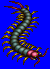
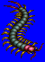
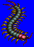
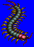

Length: 5 mm - 50 cm Weight: ???
Habitat: Bushes, in the soil Origin: ???
Meaning:Centi "hundred", Pede "foot"
Over a hundred types of centipedes are known to exist in Japan. Although it is a called a centipede, meaning "hundred feet", the actual number of leg-pairs varies, from 15-30 at a minmum to over 350. Also, some species of centipede are quite poisonous. While some centipede poisons are very painful, none are known to be lethal. In ancient Japan, centipedes were treated with awe and respect. Centipede legends still remain strong in many parts of Japan today.